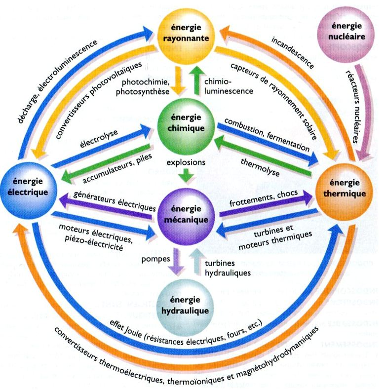

Généralités |
L'énergie est la capacité d'un système à produire un travail entraînant un mouvement, de la lumière ou de la chaleur.
L’énergie peut se présenter sous sept formes principales :
- Energie lumineuse
- Energie nucléaire
- Energie chimique
- Energie mécanique
- Energie électrique
- Energie hydraulique
- Energie thermique
Le diagramme ci-dessous indique les transformations qui permettent de passer d'une forme à une autre :

Passez à l'activité 1 ici
Créé avec HelpNDoc Personal Edition: Générateur de documentation et EPub gratuit